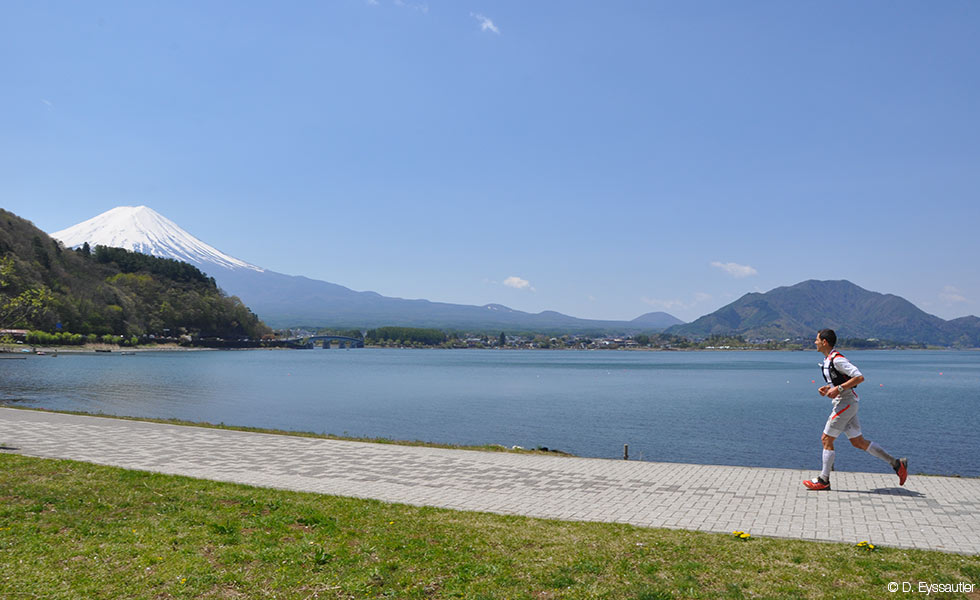

Mount Fuji
A majestic mountain in Japan
description paragraph - "Japan’s Mt. Fuji is an active volcano about 100 kilometers southwest of Tokyo. Commonly called “Fuji-san,” it’s the country’s tallest peak, at 3,776 meters. A pilgrimage site for centuries, it’s considered one of Japan’s 3 sacred mountains, and summit hikes remain a popular activity. Its iconic profile is the subject of numerous works of art, notably Edo Period prints by Hokusai and Hiroshige.